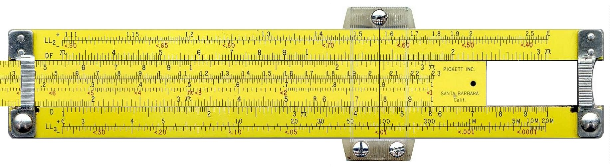
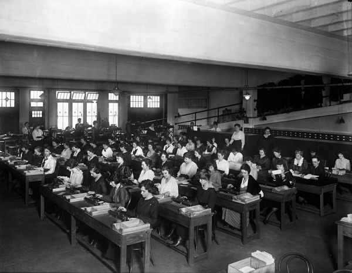

It is known to be quasi-optimal space given only matrix-vector product operation.
Key reference here is “On the numerical solution of equation by which are determined in technical problems the frequencies of small vibrations of material systems”, A. N. Krylov, 1931, text in russian
Solution x_* lies in the Krylov subspace: x_* \in \mathcal{K}_n(A, f)
The natural basis in the Krylov subspace is very ill-conditioned, since
k_i = A^i r_0 \rightarrow \lambda_\max^i v,
where v is the eigenvector, corresponding to the maximal eigenvalue of A, i.e. k_i become more and more collinear for large i.
import numpy as npimport matplotlib.pyplot as pltimport scipy.sparse as spsp%matplotlib inlinen =100ex = np.ones(n);A = spsp.spdiags(np.vstack((-ex, 2*ex, -ex)), [-1, 0, 1], n, n, 'csr');f = np.ones(n)x0 = np.random.randn(n)subspace_order =10krylov_vectors = np.zeros((n, subspace_order))krylov_vectors[:, 0] = f - A.dot(x0)for i inrange(1, subspace_order): krylov_vectors[:, i] = A.dot(krylov_vectors[:, i-1])s = np.linalg.svd(krylov_vectors, compute_uv=False)print("Condition number = {}".format(s.max() / s.min()))
Condition number = 497674309.99072236
Solution: Compute orthogonal basis in the Krylov subspace.
Good basis in a Krylov subspace
In order to have stability, we first orthogonalize the vectors from the Krylov subspace using Gram-Schmidt orthogonalization process (or, QR-factorization).
The coefficients \alpha_j = t_{j-1, j-1} and \beta_j = t_{j-2, j-1} can be recovered from orthogonality constraints
(q_j, q_{j-1}) = 0, \quad (q_j, q_{j-2}) = 0
All the other constraints will be satisfied automatically!!
And we only need to store two vectors to get the new one.
From direct Lanczos method to the conjugate gradient
We can now get from the Lanczos recurrence to the famous conjugate gradient method.
We have for A = A^* > 0
A Q_j = Q_j T_j + T_{j, j-1} q_j.
Recall that when we minimize energy functional in basis Y we get a system Y^* A Y c = Y^* f,. Here Y = Q_j, so the approximate solution of Ax \approx f with x_j = x_0 + Q_j c_j can be found by solving a small system
Q^*_j A Q_j c_j = T_j c_j = Q^*_j r_0 .
Since f is the first Krylov subspace, then Note!!! (recall what the first column in Q_j is)
Q^*_j r_0 = \Vert r_0 \Vert_2 e_0 = \gamma e_0.
We have a tridiagonal system of equations for c:
T_j c_j = \gamma e_0
and x_j = Q_j c_j.
We could stop at this point, but we want short recurrent formulas instead of solving linear system with matrix T_j at each step.
Derivation of the following update formulas is not required on the oral exam!
Since A is positive definite, T_j is also positive definite, and it allows an LU decomposition
T_j = L_j U_j, where L_j is a bidiagonal matrix with ones on the diagonal, U_j is a upper bidiagonal matrix.
We need to define one subdiagonal in L (with elements c_1, \ldots, c_{j-1}), main diagonal of U_j (with elements d_0, \ldots, d_{j-1} and superdiagonal of U_j (with elements b_1, \ldots, b_{j-1}).
and q_j are found from the Lanczos relation (see slides above).
This method for solving linear systems is called a direct Lanczos method. It is closely related to the conjugate gradient method.
Direct Lanczos method
We have the direct Lanczos method, where we store
p_{j-1}, q_j, x_{j-1} to get a new estimate of x_j.
The main problem is with q_j: we have the three-term recurrence, but in the floating point arithmetic the orthogonality is can be lost, leading to numerical errors.
But natural basis is ill-conditioned, therefore we need orthogonalization
Derive recurrent equation for sequential orthogonalization of the Krylov subspace basis
Arnoldi process for non-symmetric matrix
Lanczos process for symmetrix matrix
Clever re-writing of these formulas gives short recurrence
Some history
More details here: https://www.siam.org/meetings/la09/talks/oleary.pdf
When Hestenes worked on conjugate bases in 1936, he was advised by a Harvard professor that it was too obvious for publication - CG doesn’t work on slide rules.  - CG has little advantage over Gauss elimination for computation with calculators. - CG is not well suited for a room of human “computers” – too much data exchange. 
Properties of the CG method
We need to store 3 vectors.
Since it generates A-orthogonal sequence p_1, \ldots, p_N, after n steps it should stop (i.e., p_{N+1} = 0.)
In practice it does not have this property in finite precision, thus after its invention in 1952 by Hestens and Stiefel it was labeled unstable.
so if matrix has only 2 different eigenvalues, then there exists a polynomial of degree 2 such that q({\lambda_1}) =q({\lambda_2})=0, so in this case CG converges in 2 iterations.
If eigenvalues are clustered and there are l outliers, then after first \mathcal{O}(l) iterations CG will converge as if there are no outliers (and hence the effective condition number is smaller).
The intuition behind this fact is that after \mathcal{O}(l) iterations the polynomial has degree more than l and thus is able to zero l outliers.
Let us find another useful upper-bound estimate of convergence. Since